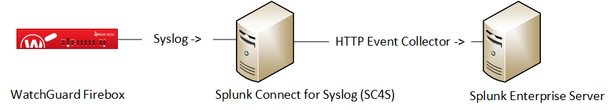
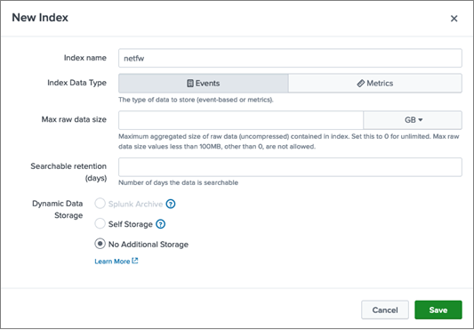
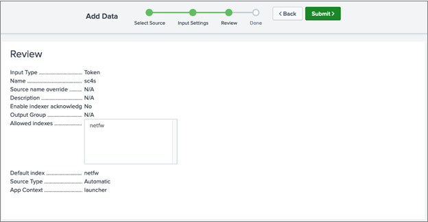
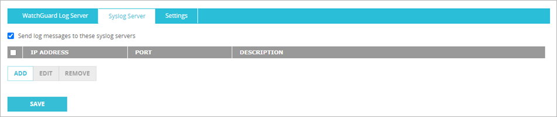
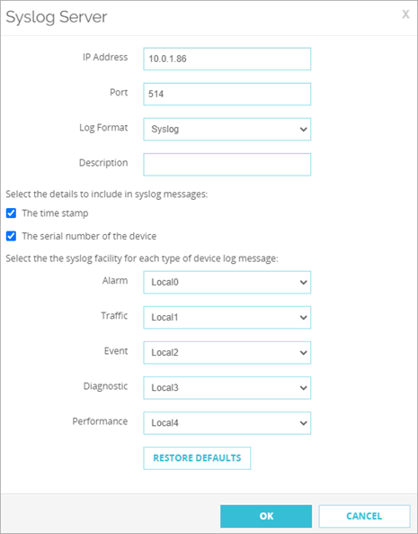
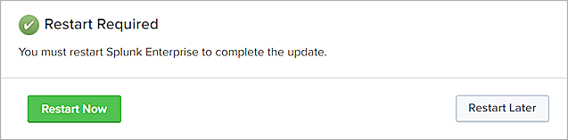
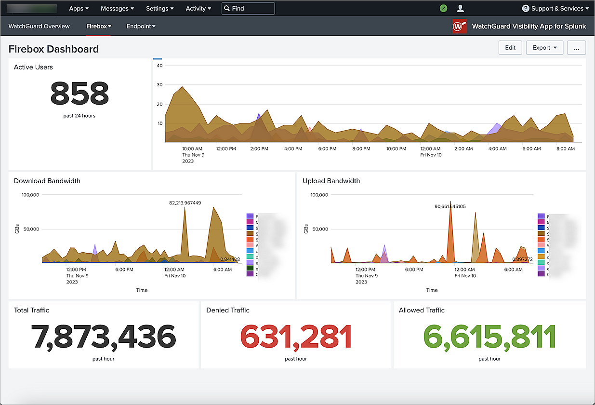

This document describes how to integrate Splunk with a WatchGuard Firebox so that a Splunk administrator can view information from syslog messages sent from the Firebox.
WatchGuard provides integration instructions to help customers configure WatchGuard products to work with products created by other organizations. If you need more information or technical support about how to configure a third-party product, go to the documentation and support resources for that product.
Contents
Integration Summary
The hardware and software used to complete the steps outlined in this document include:
- Firebox device installed with Fireware v12.10 or higher
- Splunk Enterprise 9.0 and 9.1
- Splunk Connect for Syslog (SC4S)
- WatchGuard Firebox Add-on for Splunk v2.0
- WatchGuard Visibility App for Splunk v1.0
Integration Topology
This diagram shows the topology used in the integration. In this diagram, the Splunk Enterprise deployment can be either a locally-managed Splunk installation or a Splunk Cloud deployment.

Configure Splunk Enterprise
To configure Splunk Enterprise, complete these steps:
Add an Index to Splunk Enterprise
To add an index to Splunk Enterprise:
- Select Settings > Indexes, then click New Index.
- Enter an Index Name.
You can enter any name for the index. We recommend that you use the index netfw to store the Firebox logs on your Splunk server. In this guide, we refer to the index name netfw. - Accept the default values in the dialog box, or enter values, as required for your implementation.

- Click Save.
Configure the HTTP Event Collector
After you add the index, you configure a new HTTP Event Collector data input. We recommend you use the HTTP Event Collector data input in Splunk Enterprise to connect with Splunk Connect for Syslog (SC4S).
To configure a new HTTP Event Collector data input:
- Select Settings > Data Inputs.
- In the Action column of the HTTP Event Collector row, click Add New.
- Enter a Name for the token, then click Next.
- On the Input Settings page, in the Allowed Index and Default Index text boxes, select the index name that you configured previously (for example, netfw).
- Click Review.

- Click Submit.
Configure Splunk Connect for Syslog (SC4S)
After you configure the HTTP Event Collector, download and install Splunk Connect for Syslog on the Splunk Enterprise server, and then configure it.
To configure Splunk Connect for Syslog:
- Connect SC4S to the Splunk Enterprise server.
For information on how to connect SC4S to your Splunk Enterprise server as a data input source, go to the Splunk documentation.
- To accept syslog messages from the Firebox on port UDP/514, add this text to your SC4S global configuration:
SC4S_LISTEN_SIMPLE_WATCHGUARD_FIREBOX_UDP_PORT=514
- To send Firebox events to the netfw index with the watchguard:firebox:log sourcetype, add this text to your SC4S metadata configuration:
watchguard_firebox,index,netfw
watchguard_firebox,sourcetype,watchguard:firebox:log
Configure the Firebox to Send Syslog Messages to Splunk
To configure the Firebox to send syslog messages to Splunk:
- Log in to Fireware Web UI with an administrator account.
- Select System > Logging.
- Select the Syslog Server tab.

- Select the Send log messages to these syslog servers check box.
- Click Add.
The Syslog Server dialog box opens.

- In the IP Address text box, enter the IP address of the server on which SC4S is installed. In this example, we use 10.0.1.86.
- In the Port text box, enter the port you configured to receive the Firebox logs. In this example, we use 514.
- From the Log Format drop-down list, select Syslog.
- (Optional) To include the time stamp and serial number, select the The Time Stamp and The Serial Number of the Device check boxes.
- Click OK.
Install the WatchGuard Visibility App For Splunk
To install the WatchGuard Visibility App for Splunk:
- Log in to Splunk Enterprise.
- From the Apps menu, select Manage Apps.

- To browse the apps available from Splunkbase, click Browse More Apps.
- In Splunkbase, search for WatchGuard apps.
- Install the WatchGuard Firebox Add-on for Splunk and the WatchGuard Visibility App for Splunk.
- Click Restart Now, then confirm that you want to restart.

Test the Integration
After the Firebox sends syslog entries to Splunk, you can review Firebox information in the WatchGuard Visibility App for Splunk or search for the netfw index.
In the WatchGuard Visibility App for Splunk, you can view the Firebox data on the main dashboard or select Firebox Dashboard from the Firebox menu.
